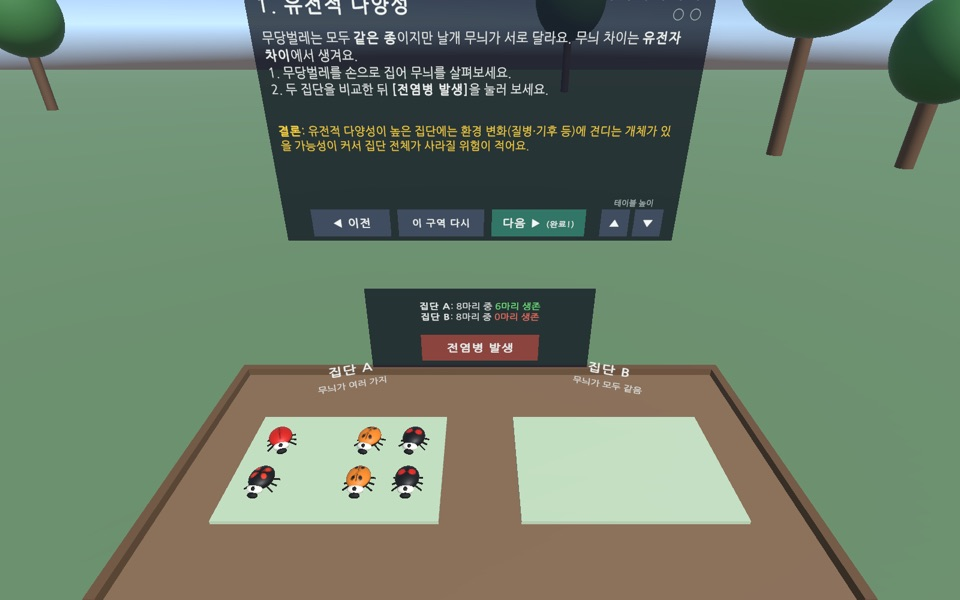
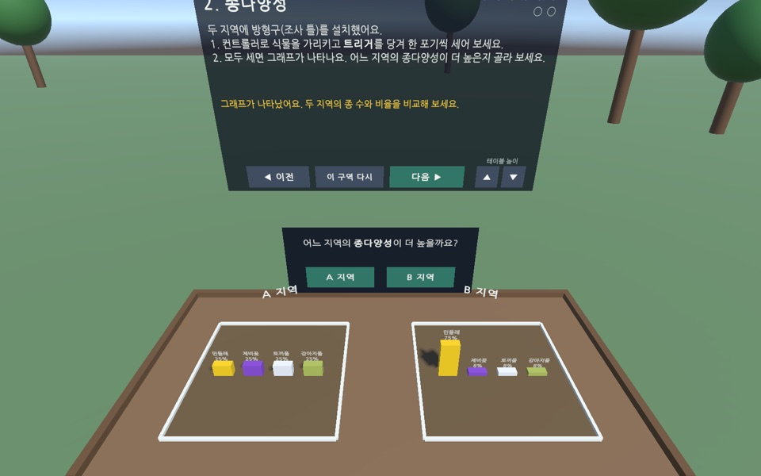
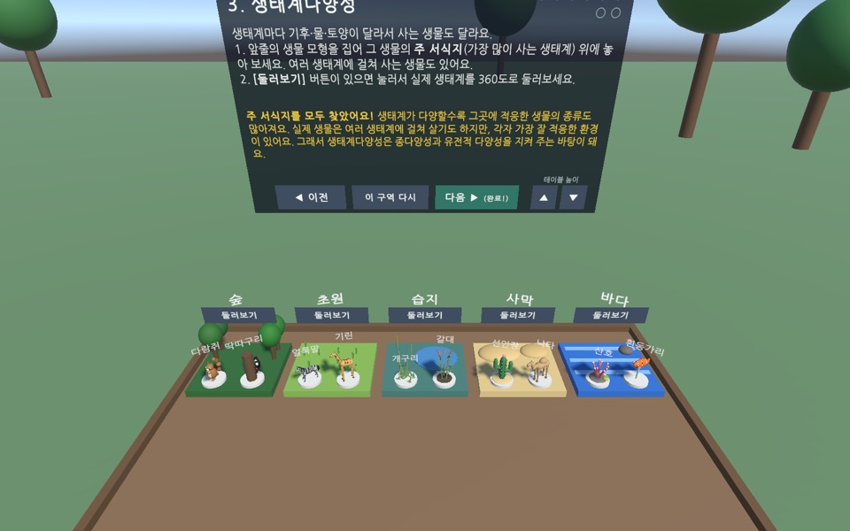

생물다양성 XR 탐험 — Quest 앱 전체판
고등학교 1학년 통합과학 · 생물다양성의 세 수준(유전적·종·생태계다양성)을 Meta Quest 3/3S에서 직접 체험하는 수업 앱입니다. 웹 체험판(② 종다양성 한 구역)을 써 보고 수업 전체를 하고 싶은 선생님께 교사 확인 후 드리는 설치용 자료입니다.



웹 체험판과 전체판
| 웹 체험판 | Quest 앱 전체판 | |
|---|---|---|
| 내용 | ② 종다양성 1개 구역 | 입구 → ① 유전적 → ② 종 → ③ 생태계다양성 → ④ 360 생태계 탐험 → ⑤ 360 현장 탐방(스트리트뷰·360 사진) → ⑥ 퀴즈 → 탐험 완료 |
| 설치 | 필요 없음 — 주소만 열기 | 헤드셋마다 APK 설치(개발자 모드 필요) |
| 기기 | PC·휴대폰 브라우저, Quest 브라우저 | Meta Quest 3/3S |
| 조작 | 가리키고 트리거(클릭) | 손으로 집기·놓기, 가리키기, 버튼 |
| 교사 준비 | 없음 | 수업 준비 도구로 설치와 360 장면 보내기(Windows·Mac) |
받는 방법 현재 버전 0.1.5 · 2026-10-18
전체판(APK)은 교사 확인을 거친 선생님께만 보내 드립니다. 아래 중 편한 곳으로 문의해 주세요.
학교, 성함, 사용하실 수업(과목·학년)을 적어 주시면 교사 확인 후 학교 배포 묶음(APK + 수업 준비 도구 + 교사용 안내문, 약 52MB) 받는 방법을 안내해 드립니다. 교사 확인에 필요한 것 이상의 개인정보는 보내지 않으셔도 됩니다.
패키지 이름 com.classroom.biodiversityxr · Android 12L(SDK 32) 이상 · arm64 · Meta Horizon Store에 등록된 앱이 아니어서 개발자 모드로 설치합니다.
준비물
- Meta Quest 3 또는 3S, 데이터 전송이 되는 USB-C 케이블(여러 대면 USB 허브)
- Windows PC(또는 Mac) — 수업 준비 도구는 Python 3로 실행됩니다
- 헤드셋 개발자 모드: 스마트폰 Meta Horizon 앱 → 메뉴 → 기기 → 헤드셋 설정 → 개발자 모드 켜기 (Meta 개발자 조직 등록 필요: developers.meta.com)
- adb(헤드셋 연결 도구): Meta Quest Developer Hub를 설치하거나, Google의 SDK Platform-Tools를 받아 묶음 폴더 안에
platform-tools로 넣습니다 - (선택) 360 현장 탐방에서 구글 스트리트뷰를 쓰려면 Google Maps API 키 — 준비 도구 안의 'API 키 만드는 방법' 참고
설치 방법
방법 1. 수업 준비 도구 (여러 대를 한 번에, 권장)
- 받으신 묶음 zip을 풀고 수업준비도구-Windows.bat(Mac은 수업준비도구-Mac.command)을 더블클릭하면 브라우저에 준비 페이지가 열립니다. Python이 없으면 안내가 나옵니다(설치 첫 화면에서 "Add python.exe to PATH" 체크).
- Quest를 USB-C로 연결하고 헤드셋 안의 'USB 디버깅 허용' 창에서 항상 허용을 체크한 뒤 [허용]을 누릅니다.
- [앱 설치·업데이트] → 연결된 모든 헤드셋에 앱이 설치됩니다.
- (선택) '추천 장소'에서 [생태계별 대표 5곳 한 번에 추가]를 누르거나 직접 360 사진·스트리트뷰 링크를 넣고 [수업 자료 보내기]를 누릅니다.
방법 2. Meta Quest Developer Hub에 APK 끌어 놓기 (한 대씩)
- Developer Hub에서 연결된 헤드셋을 고르고, 묶음 안의 APK 파일을 'Apps' 영역으로 끌어 놓습니다.
- 360 현장 탐방 장면을 쓰려면 방법 1의 준비 도구로 수업 자료를 보냅니다.
실행과 수업 팁
- 헤드셋 앱 목록 → 오른쪽 위 필터 '알 수 없는 출처' → BiodiversityXR
- 제자리 체험입니다. 조이스틱으로 움직이지 않고 몸을 돌려 둘러봅니다. 정면이 틀어지면 Meta 버튼(또는 왼쪽 ☰)을 길게 눌러 처음 자리로 돌아옵니다.
- 테이블이 높거나 낮으면 패널의 ▲▼로 맞춥니다(앉아서도 체험 가능). '이 구역 다시'로 현재 구역을 처음부터 할 수 있습니다.
- ④ 360 생태계 탐험은 주변 전체가 바뀌니 체험 공간 주변을 비워 두세요.
- 스트리트뷰는 구글 약관상 미리 저장할 수 없어 수업 중 헤드셋이 Wi-Fi에 연결되어 있어야 합니다.
문제가 생기면
- 헤드셋이 목록에 안 보임 → 데이터용 케이블인지, 개발자 모드, 'USB 디버깅 허용'을 확인하세요.
- 스트리트뷰가 안 나옴 → 헤드셋 Wi-Fi, API 키, 학교망에서
maps.googleapis.com차단 여부를 확인하세요. - 360도 사진이 찌그러짐 → 가로:세로 2:1인 360도(등장방형) 사진인지 확인하세요.
꼭 알아 두세요
- 학교 기기에 개발자 모드·외부 앱 설치가 허용되는지 학교 정책을 먼저 확인하세요.
- 앱에는 로그인·이용 기록 수집이 없습니다. 교사가 스트리트뷰 장소를 넣은 경우에만 헤드셋이 구글 스트리트뷰 이미지를 불러옵니다(Google 약관 적용).
- 교육용으로 만든 개인 제작 앱입니다. 수업 전에 직접 한 번 체험해 보시고, 문제가 있으면 알려 주세요.
이용 조건 · 출처
학교 수업·연수·비영리 교육에 자유롭게 활용할 수 있습니다. 앱이나 그 일부를 복제·수정해 다른 곳에 배포하는 것은 허락하지 않습니다.
받으신 파일은 다시 나누지 마시고, 동료 선생님께는 이 페이지 주소를 알려 주세요.
3D 생물 모델: Quaternius, Kenney, hat_my_guy, AssetQuest, MiniPoly, Mohabins (모두 CC0) · 글꼴: 나눔고딕(NAVER, SIL OFL 1.1).
자세한 목록은 묶음 안의 '외부에셋-출처.md'에 있습니다.